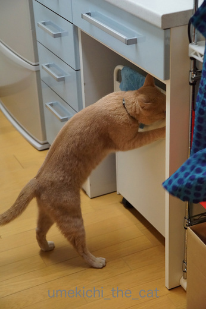
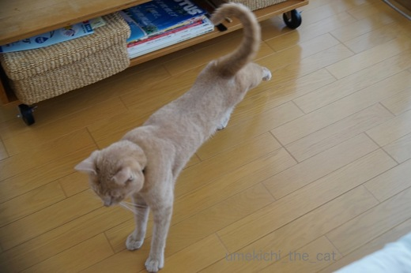
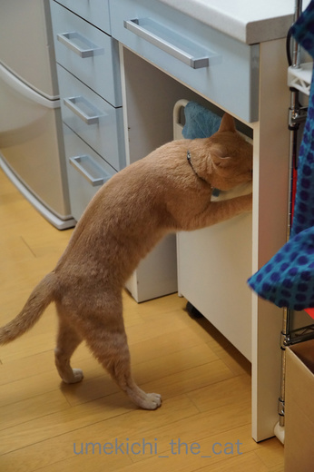
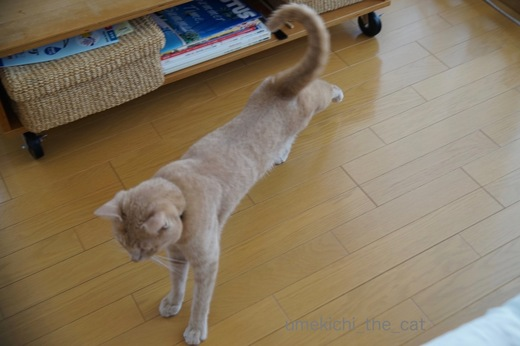

決定的瞬間を逃しまくる [梅吉]
ず〜っと狙い続けているのになかなか撮れない瞬間。それは・・・

梅吉がプッシュ式のゴミ箱を開ける瞬間。
本体と違う色の部分を押せば開く、を理解しています。
普段は「こら〜〜〜っ！」と怒られるので

![[猫]](https://blog.ss-blog.jp/_images_e/101.gif) はっ！みつかってしもたっ！！
はっ！みつかってしもたっ！！
という顔でやめちゃいました。
おかーさんの都合の良い時だけなんて出来ないよねー。
偉い、偉いですよ・・・（でも残念・・・
そしてもう一つの瞬間が

後ろ足のび〜。
以前は片足ぴーんで終わっていたのですが
最近は両後ろ足の肉球をきっちり上に向けてフィニッシュする様になりました。
この写真も決定的瞬間を逃して終わってます。
となかなか撮れない決定的瞬間ですが
こっちの世界とあっちの世界を白目で彷徨う梅吉の動画が撮れました！
これを決定的瞬間と思うのは飼い主だけかもしれませんが・・・ (^▽^;)
 ↑ガブッと一押し↑
↑ガブッと一押し↑
週末は紫陽花を見に出かけました。
入梅したのに空気は爽やか良い天気。
ジメジメは大の苦手なので嬉しいのですが
乾いた空気と高い気温に紫陽花はちょっとぐったりでした。
お日様を浴びる紫陽花。
アナベル好き〜。
珍しいことに蚊に刺されずに帰ってきました。
これは空梅雨の恩恵？
紫陽花の写真はすべておっとの撮影です。
私は出かける時デジイチは持ち歩きません。だって重いから・・・・
いちおうブロガーなのにねー(≧艸≦*)

梅吉がプッシュ式のゴミ箱を開ける瞬間。
本体と違う色の部分を押せば開く、を理解しています。
普段は「こら〜〜〜っ！」と怒られるので

という顔でやめちゃいました。
おかーさんの都合の良い時だけなんて出来ないよねー。
偉い、偉いですよ・・・（でも残念・・・
そしてもう一つの瞬間が

後ろ足のび〜。
以前は片足ぴーんで終わっていたのですが
最近は両後ろ足の肉球をきっちり上に向けてフィニッシュする様になりました。
この写真も決定的瞬間を逃して終わってます。
となかなか撮れない決定的瞬間ですが
こっちの世界とあっちの世界を白目で彷徨う梅吉の動画が撮れました！
これを決定的瞬間と思うのは飼い主だけかもしれませんが・・・ (^▽^;)
週末は紫陽花を見に出かけました。
入梅したのに空気は爽やか良い天気。
ジメジメは大の苦手なので嬉しいのですが
乾いた空気と高い気温に紫陽花はちょっとぐったりでした。
お日様を浴びる紫陽花。
アナベル好き〜。
珍しいことに蚊に刺されずに帰ってきました。
これは空梅雨の恩恵？
紫陽花の写真はすべておっとの撮影です。
私は出かける時デジイチは持ち歩きません。だって重いから・・・・
いちおうブロガーなのにねー(≧艸≦*)

カフェオレ色の梅吉

梅吉 2023年8月10日 永眠


梅吉と出会った譲渡会

犬猫の理由なき殺処分ゼロ
妄想広告
UMEKICHI 光

爆発的に早い！
時々攻撃的！
Thanks to Mr.Boss365
爆発的に早い！
時々攻撃的！
Thanks to Mr.Boss365

そうそう、いたずらしてる決定的瞬間を撮ろうとしても、
こちらに気づいた瞬間に止めちゃうんですよねぇ(*_*)
お猫様は気まぐれだから、カメラを持ってないときに限って色々やらかしてくれます^^;
梅吉さん、宇宙と交信中ですかｗ
by ニッキー (2017-06-12 14:13)
梅吉さん！
白目クリクリしながら、あっちとこっち、行ってますねぇ（笑）
これはもう、決定的瞬間ですとも！！
ゴミ箱を覗くところを、覗かれた、しもたっ！！の表情も、めちゃいい！！
梅吉さんっぽいです(^^♪
by morichan (2017-06-12 14:16)
カメラを用意してない時にやらかしてくれますよね(*^_^*)目にカメラ内蔵ならいいのがいっぱい撮れそうなんですけどね(=^・^=)
by palpal (2017-06-12 15:50)
1番上の写真、何か人間みたいに見えますね(^^;)
仕草が何とも言えず可愛いです。
by kou (2017-06-12 17:08)
白目動画はユーチューブのお気にいりに入れちゃいました。時々見てむふふさせていただきます。タイトルもGOOD!
by zombiekong (2017-06-12 17:42)
いい写真が撮れましたね( ´艸｀)
相変わらずbodyが引き締まり素敵な子だ。
動画面白かったです♡
by muku (2017-06-12 19:26)
立ち上がってイタズラする瞬間！！
たっち姿も可愛いです(#^.^#)
白目！！そうそう黒、白と動きますよね！
我が子も白目率が高いので
今度動画撮ってみようかな？
でもカメラを取りに行くと起きちゃうんですよね(;^_^A
by きぃ (2017-06-12 20:45)
目玉が動くたびに「アッハッハッハ」「アッハッハッハ」
声を出して「アッハッハッハ」
又々動いて「アッハッハッハ」何度笑ったか覚えていません「アッハッハッハ」
by kiki (2017-06-12 21:23)
みつかってしもたっ! のお顔が最高♪
悪事はバレるものなのですよ～梅吉さん^^;
めげずに頑張ってちぃさんに決定的瞬間をプレゼントしてあげてね^^
白目で熟睡、すばらしい～！
カメラ取りに行ってる間に起きちゃいますもん(ーー;)
by ゆきち (2017-06-12 21:41)
一枚目、脚がピンと伸びて作業員が何か作業しているみたいですね♪
白目梅吉さん、ここまで寝ているとそうっとしてあげたくなります。^^)
でも、目が乾かないのかなあ。。。^^;
by yes_hama (2017-06-12 22:00)
怒られたら即反応するんですね。しまった！って貌していますね（笑）
by みぃにゃん (2017-06-12 22:45)
こんばんは。ご訪問＆コメントありがとうございました。
梅吉くん！可愛い～♪
家もいたずらっ子ですごいですよ～。
でも、事の起きた後の写真は撮れますが決定的瞬間はなかなか撮れません。
白目の寝顔も、私・・・大好物ですｗ
行ったり来たり。うつらうつら。最後は戻ってきてくれて良かった～。
紫陽花も素敵です♪きれいな写真ですね(^-^)
by emi (2017-06-12 23:38)
ハハハ(≧▽≦)
もう降参！！めちゃくちゃウケました！！
私だったらこの映像、撮れません。
笑ってしまって無理〜！！
by も〜 (2017-06-12 23:45)
動画、たまりませんｗｗ
これは悶えるよぉぉぉ(笑)
なかなか狙った瞬間の写真って撮れないですよねー。
「みつかってしもたっ！！」の顔もいいな。
あおも、お弁当箱のぞき込んでペロって舐めたから「こら！」って言ったら
「舐めてないよ！こんなまずいものボクの前に出すから砂かけしようとしただけだよ」って、あわてて砂かけ行動してました(笑)
ごまかせてないってｗｗ
by リュカ (2017-06-13 09:44)
しもたっ！のお顔可愛い＾＾
決定的瞬間ってたしかになかなか撮れないですよね。
きゃあ、白目行ったり来たり彷徨ってるぅ～～♪
もう最高です☆決定的瞬間ですね＾＾
by sana (2017-06-13 18:24)
梅吉君はプッシュ式ゴミ箱を開けて、その後どうするのでしょう？
ただ開けるだけ？ウチのベイクは外飼いされてたからか、三角コーナーから魚の匂いのついたシートを夜な夜な持ち出す癖がありました(今は三角コーナを片付けてるのでやれないです)
決定的瞬間ですね！白目ファンにはたまらない動画…動画が微妙に揺れていてご苦労がしのばれまする。
by BillK-ko (2017-06-13 18:35)
ニッキーさん＞いつもは怒られるのにブログの証拠写真のために
「止めないでよ〜」なんて我ながらなんて理不尽な！と思いました^^;
でもでもいつか決定的瞬間を撮ってみせますとも(๑˃̵ᴗ˂̵)و
morichanさん＞いつもは白目→完落ち、で眠ってしまうのですが
この日は結構な時間あっちとこっちを彷徨っていましたww
いたずらを見つかった時の表情は本当になんとも言えず梅吉らしいです。
というかいっつもいたずらして怒られているから定番の表情かも^^;
palpalさん＞そうそう！SF映画とか近未来映画見ていると
そんな場面が出て来ますよね。
映画では諜報活動とかかっこいいことに使ってますが
私は猫が撮りたいの〜！！多分多数派だと思うケド(^o^)
kouさん＞あ？中のヒト出ちゃっているかも〜(≧▽≦)
ゴミ箱を覗こうと踏ん張る足、いいですよね！！
zombiekongさん＞わ！お気に入りに入れていただいたの？
うれしいで〜すww
ちょっとホラーテイストなところが気に入っていただけたのかな＾＾
mukuさん＞ちょっとぽっちゃりの時もあったのですが
ビシッとダイエットした梅吉です。
飼い主も見習いたいんですけどね・・・・^^;
きぃさん＞Leaちゃん程の白目率なら動画撮れそうですね〜。
カメラは常に傍に！ぜひ！！
白目動画、見てみたいで〜す(≧艸≦*)
kikiさん＞わ〜い、喜んでいただけたのですね！！
お風呂上がりの？おやすみ前の？一服の清涼剤になったでしょうか(≧艸≦*)
by ちぃ (2017-06-14 15:41)
ゆきちさん＞にゃんこってものすごく気まずい顔しますよね。
梅吉はその顔が得意でもあります(^▽^;)
で、気まずい顔をしてもまた同じいたずらを繰り返す・・・
ぜ〜んぜん悪いと思ってないんですよね〜。
家にいるときはスマホ・デジイチは手を伸ばせる範囲に＾＾
それでも決定的瞬間はなかなか撮れませ〜ん^^;
yes_hamaさん＞くわっと開いた足が安定感バツグンですよね。
本にゃんはゴミ箱開け職人のつもりかもしれませんが
ゴミ箱の中から使ったラップやらなんやらを
引っ張り出すのはや〜め〜て〜^^;デス・・・・
みぃにゃんさん＞「しまった！わし、わるいことしてしもた！」
ではなく「「なんや、みつかったわ。つまらん・・・」と
思ってますよ〜 (-_-メ)
by ちぃ (2017-06-14 17:19)
emiさん＞emiさんのところもいたずらっ子ちゃんですか＾＾
いたずらは困りますが面白くてついつい笑ったり
カメラ構えたりしちゃいますよね〜。
その割には決定的瞬間を逃してますが・・・(⌒_⌒;
暑くなるとなぜか梅吉は白目がちになります！
また遊びに来てくださいね〜(^o^)
も〜さん＞初めの頃は爆笑で写真すら撮れませんでしたが
最近は「あ〜また白目やで〜」と割と冷静に見てます＾＾
でもカメラがビミョーに揺れているのは笑っているから・・・
リュカさん＞うふふふふ、梅吉渾身の白目ですよぉ〜ww
あおくんつまみ食いがみつかって砂かけでごまかすなんて役者だわね！
バレバレだけど、そこがかわいいところ(^_－)☆
って、リュカさんお弁当作ってるのね！すごい！！
sanaさん＞決定的瞬間は本当に逃してばかりで・・・
絵が描けたらいいのに！って毎日思ってます (^▽^;)
あとは梅吉に「これからいたずらするで」って
申告するように教えこもうかしら・・・・
BillK-koさん＞ベイクさんの外飼い話・・・そこでちょっとウルっと・・・
で、梅吉はゴミ箱に入っている食品の入っていたトレーや
使った後のラップを取り出そうとしますよ〜。
反応するのわかっているからちゃんと洗って捨てているのに
それでも反応するの！あわよくばペロペロしたい！！
もう食い意地張りすぎー(⌒_⌒;
ゴミ箱の蓋はテープで止めてあります。
使いにくいったらありゃしないわww三角コーナーももちろんありません。
動画、ビミョーに揺れているのは笑いながら撮っているからでーす。
白目に慣れているとは言え、やっぱり笑っちゃう！！
by ちぃ (2017-06-14 17:46)
梅ちゃん、めっちゃモデル体型！！
by Ginger (2017-06-17 15:03)